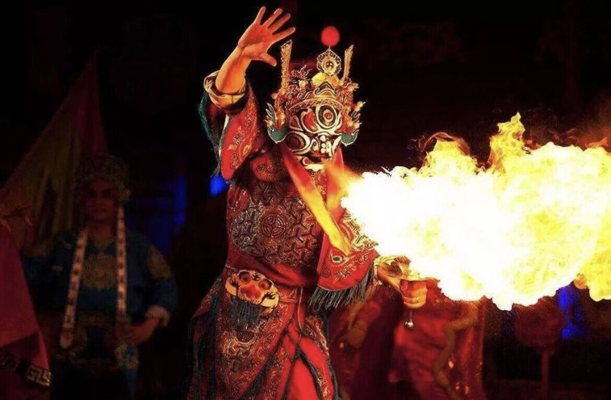

成都，四川省辖地级市，简称"蓉"”，别称蓉城、锦城，为四川省省会、副省级市、超大城市、国家中心城市，成渝地区双城经济圈核心城市，国务院批复确定的国家重要的高新技术产业基地、商贸物流中心和综合交通枢纽、西部地区重要的中心城市。截至2OQ21年底，全市下辖12个市辖区、3个县、代管5个县级市，总面积14335平方千米，截至2021年年末，常住人口2119.2万人，常住人口城镇化率79.48%。
民间艺术成都糖画俗称"倒糖饼儿""糖粑粑儿""糖灯影儿"，是流行于四川省成都地区的一种兼具雕塑性和绘画性的民间艺术。成都糖画历史悠久，据《本草纲目》记载:“以白砂糖煎化，模印成人物狮象之形者为飨糖，《后汉书》注所谓猊糖是也。"以熔糖为原料的糖画即由"飨糖'演变而来，其成品既是甜美的糖食，又是可供观赏的艺术品，可谓“观之若画，食之有味”。
非物质文化遗产川剧，俗称川戏，主要流行于四川东中部、重庆及贵州、云南部分地区，是融汇高腔、昆曲、胡琴(即皮黄)、弹戏(即梆子）和四川民间灯戏五种声腔艺术而成的传统剧种，是中国传统戏曲剧种之一。2006年由成都市"四川省艺术研究院"申报的川剧，被列入第一批国家级非物质文化遗产名录，成为成都戏剧类最具代表性的非物质文化遗产。川剧由昆曲、高腔、胡琴、弹戏、灯调五种声腔组成，分文生、旦角、生角、花脸、丑角5个行当，尤以文生、小丑、旦角的表演最具特色。川剧表演以“"四功""五法”为基础，融入极具人物个性的变脸、变髯口、飞袍变须、滚地换装、吐火、藏刀、魔烛等特技，其中，川剧变脸(脸谱)是川剧表演艺术中重要的组成部分，是历代川剧艺人共同创造并传承下来的艺术瑰宝。
 民俗风情“坐茶馆”是成都人的一种特别嗜好，因此茶馆遍布城乡各个角落。成都茶馆不仅历史悠久,数量众,旦瓦人品以郄二形浓郁的无论你走进哪座茶馆，都会领略到一股浓郁的成都味:竹靠椅、小方桌、三件头盖茶具、老虎灶、紫铜壶，还有那堂信跑堂...。
宗教信仰成都市有佛教、道教、伊斯兰教、天主教和基督教5种宗教。东汉顺帝时，张道陵携弟子修道于成都大邑县境内的鹤鸣山，创立五斗米道，为成都道教之始，至今已有1800多年的历史。东晋隆安三年(39年）益州刺史毛球在岷蜀建龙渊寺，是佛教正式传入成都的重要标志。
方言特征构词法方面，跟普通话对比，成都方言构词法上显著的不同是名词和动词的重叠式，即，名词能够重叠，动词一般不能重叠。 句法方面，成都方言与普通话对比，显著的不同是在补语的构成上。 和中国其他方言一样，成都方言早先一直处于相对稳定的状态。1980年代之后，随着成都以及整个中国经济的迅速发展，成都和外界的交流急剧增多。受普通话的影响，成都方言相对稳定的状态被打破，语音开始经历一个明显变化的时期—向普通话的语音靠拢。 另外，如果一个字在音系上显得孤立，则这个字更容易被北京方言同化，而如果一个字在音系上有一个强大的"系列"”，则不容易向北京方言靠拢。究其原因，是因为後者更容易被人们发现其在四川方言中的规律，故更容易跟普通话保持区别。